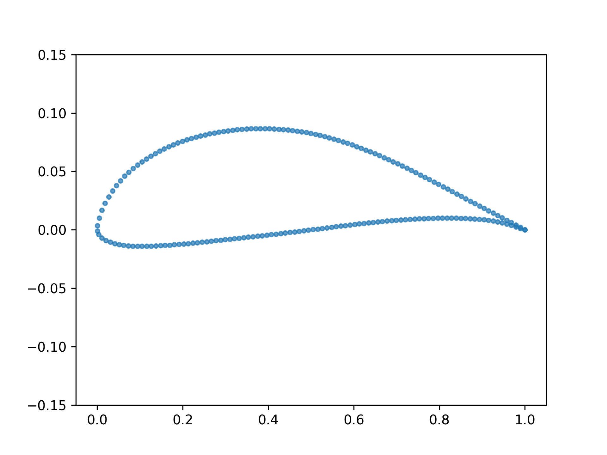

Airfoil#
{kind=link}

Version |
0 |
Design space |
|
Objectives |
cd: ↓ cl: ↑ |
Conditions |
mach: 0.8 reynolds: 1000000.0 area_initial: None area_ratio_min: 0.7 cl_target: 0.5 |
Dataset |
|
Container |
|
Import |
|
Airfoil 2D shape optimization problem.
Problem Description#
This problem simulates the performance of an airfoil in a 2D environment. An airfoil is represented by a set of 192 points that define its shape. The performance is evaluated by the MACH-Aero simulator that computes the lift and drag coefficients of the airfoil.
Motivation#
The field of aerodynamics has always been a challenging testbed for engineering problems. In fact, many optimization and design methodologies were originally developed or perfected specifically for aerodynamic design applications [1]. Part of the reason for this is that even relatively simple aerodynamics problems can be complex, with slight changes in design parameters typically resulting in large changes in performance. In addition, the potential applications derived from solving these problems are quite practical, ranging from fixed-wing aircraft to hydrofoils used in ships, and wind turbine blades [2]. Here, we present Airfoil, a simple yet sufficiently realistic 2-dimensional aerodynamics benchmark problem.
The airfoil problem presents a simple aerodynamic shape optimization routine based on Reynolds’ averaged Navier-Stokes equations (RANS). In this problem, the solver attempts to indirectly morph the initial geometry to achieve a certain prescribed lift coefficient (which could correspond to a hypothetical loading requirement) while minimizing the amount of drag generated by the design.
Design space#
The design space is represented as a tuple containing 192 2D points describing the airfoil coordinates and a scalar describing the rotation of the coordinates relative to the chord line needed to achieve a certain incoming direction of flow (the angle of attack, alpha):
This specific coordinate parameterization (192) and rotational scalar design parameterization have been previously used in [3]. Another benchmark airfoil optimization problem, mentioned in [4] (Transonic RAE2822), was also used to internally validate the meshing and design parameterization. All training data, as well as the original and complete formulation of this problem can be found in [5].
Objectives#
The objective is to minimize the coefficient of drag, \(c_d\), and the optimization problem is defined as follows:
The terms used in the definition of the problem are described in Table 1. Note that some variables are defined relative to a required initial design input.
Table 1: Optimization Problem Parameters
Category |
Parameter |
Quantity |
Lower |
Upper |
Units |
Description |
|---|---|---|---|---|---|---|
Objective |
\(c_d\) |
1 |
- |
- |
Non-Dim./Counts |
Coefficient of drag |
Variable |
\(\Delta y_i\) |
20 |
-0.025 |
0.025 |
m |
Change from initial FFD cage y value: \(\Delta y_i = y_i - y_{\text{init}}\) |
\(\alpha\) |
1 |
0.0 |
10.0 |
Degrees |
Angle of Attack |
|
Constraint |
\(c_l = c_l^{\text{con}}\) |
1 |
0.0 |
0.0 |
Non-Dim. |
Coefficient of lift |
\(\frac{A}{A_{\text{init}}}\) |
1 |
\(\left( \frac{A}{A_{\text{init}}} \right)_{\text{min}}\) |
1.20 |
Non-Dim. |
Area fraction; relative to initial |
Instead of directly parameterizing all (192) coordinates of the airfoil, a smaller set of 20 control points is used. The collection of these control points forms what is known as a free-form deformation cage (FFD). Changes in the values of the FFD cage smoothly deform the underlying coordinates. In the airfoil problem, modifications to the geometry are parameterized by changes in the FFD control point y coordinates, \(\Delta y_i\). See the EngiBench paper for more details.
Note that, for simplicity, in this definition we have omitted certain constraints pertaining to thickness as well as those concerned with the shearing of the leading (front) and trailing (tail end) edges.
Conditions#
The conditions are defined by the following parameters:
mach: Mach number.reynolds: Reynolds number.area_ratio_min: Minimum area ratio (ratio relative to initial area) constraint.area_initial: Initial area.cl_target: Target lift coefficient to satisfy equality constraint.
Note that while it may be possible to constrain the design’s area ahead of time, this is not typically possible for the prescribed coefficient of lift. In addition it may not be possible to achieve certain combinations of prescribed area and coefficient of lift constraints.
Simulator#
All simulations used the open source and differentiable ADflow solver [6,7] as part of the MACH-Aero framework. ADflow was configured to run RANS simulations with the Spalart-Allmaras model for turbulence effects. Furthermore, within ADflow, the approximate Newton-Krylov method was used to improve convergence and robustness [8]. pyHyp, a hyperbolic mesh generator [9] was used to generate volume meshes automatically. For the optimization problem itself, we use the sequential least squares programming algorithm as implemented in the sparse optimization framework, pyOptSparse [10]. For geometry parameterization and deformation, module, we used the pyGeo and IDWarp frameworks [11,9].
You can install gcc and gfortran on your system with your package manager.
On Ubuntu:
sudo apt-get install gcc gfortranOn MacOS:
brew install gcc gfortranOn Windows (WSL):
sudo apt install build-essential
Dataset#
v0#
The dataset linked to this problem is hosted on the Hugging Face Datasets Hub.
Fields#
The dataset contains optimal design, conditions, objectives and these additional fields:
initial_design: Design before the adjoint optimization.cl_con_violation: # Constraint violation for coefficient of lift.area_ratio: # Area ratio for given design.
Creation Method#
A dataset, originally described in [5], is integrated within our framework. The limits for the parameters in the data set are listed in Table 2. 1400 parameter combinations were chosen using Latin hypercube sampling (LHS) in the 4-dimensional parameter space. The training, testing and validation sets were randomly split into 748, 140, and 47 airfoil samples, respectively. Finally, Table 3 describes each variable in the data set available through the EngiBench API.
Table 2: Sampled Parameter Bounds
Category |
Parameter |
Lower |
Upper |
Description |
|---|---|---|---|---|
Flow Condition |
M |
0.4 |
0.9 |
Mach number |
Re |
1E6 |
10E6 |
Reynolds number |
|
Constraint |
\(C_l^{\text{con}}\) |
0.5 |
1.2 |
Coefficient of lift |
\(\left( \frac{A}{A_{\text{init}}} \right)_{\text{min}}\) |
0.75 |
1.0 |
Minimum area ratio |
Table 3: Airfoil dataset variables
Category |
Variable Name |
Description |
|---|---|---|
Flow Condition |
mach |
Mach number |
reynolds |
Reynolds number |
|
Constraint |
cl_target |
Coefficient of lift (targeted constraint during optimization) |
area_ratio_min |
Minimum area ratio |
|
Design Value |
area_initial |
Area of the initial design |
cd |
Coefficient of drag for the current design |
|
cl |
Coefficient of lift for the selected design |
|
area_ratio |
Area ratio of the selected design |
References#
If you use this problem in your research, please cite the following paper:
@inproceedings{diniz2024optimizing,
author = {Diniz, C. and Fuge, M.},
title = {Optimizing Diffusion to Diffuse Optimal Designs},
booktitle = {AIAA SCITECH 2024 Forum},
year = {2024},
doi = {10.2514/6.2024-2013}
}
[1] Martins, J. R. R. A. and Ning, A. (2022). Engineering Design Optimization. Cambridge University Press, Cambridge, UK.
[2] Martins, J. (2022). Aerodynamic design optimization: Challenges and perspectives. Computers & Fluids, 239, 105391.
[3] Chen, W., Chiu, K., and Fuge, M. (2019). Aerodynamic Design Optimization and Shape Exploration using Generative Adversarial Networks. In AIAA Scitech 2019 Forum.
[4] He, X., Li, J., Mader, C. A., Yildirim, A., and Martins, J. R. R. A. (2019). Robust aerodynamic shape optimization—from a circle to an airfoil. Aerospace Science and Technology, 87, 48-61.
[5] Diniz, C. and Fuge, M. (2024). Optimizing Diffusion to Diffuse Optimal Designs. In AIAA SCITECH 2024 Forum. American Institute of Aeronautics and Astronautics.
[6] Mader, C. A., Kenway, G. K. W., Yildirim, A., and Martins, J. R. R. A. (2020). ADflow—An open-source computational fluid dynamics solver for aerodynamic and multidisciplinary optimization. Journal of Aerospace Information Systems.
[7] Kenway, G. K. W., Mader, C. A., He, P., and Martins, J. R. R. A. (2019). Effective Adjoint Approaches for Computational Fluid Dynamics. Progress in Aerospace Sciences, 110, 100542.
[8] Yildirim, A., Kenway, G. K. W., Mader, C. A., and Martins, J. R. R. A. (2019). A Jacobian-free approximate Newton-Krylov startup strategy for RANS simulations. Journal of Computational Physics, 397, 108741.
[9] Secco, N., Kenway, G. K. W., He, P., Mader, C. A., and Martins, J. R. R. A. (2021). Efficient Mesh Generation and Deformation for Aerodynamic Shape Optimization. AIAA Journal.
[10] Wu, N., Kenway, G., Mader, C. A., Jasa, J., and Martins, J. R. R. A. (2020). pyOptSparse: A Python framework for large-scale constrained nonlinear optimization of sparse systems. Journal of Open Source Software, 5(54), 2564.
[11] Hajdik, H. M., Yildirim, A., Wu, N., Brelje, B. J., Seraj, S., Mangano, M., Anibal, J. L., Jonsson, E., Adler, E. J., Mader, C. A., Kenway, G. K. W., and Martins, J. R. R. A. (2023). pyGeo: A geometry package for multidisciplinary design optimization. Journal of Open Source Software, 8(87), 5319.
Lead#
Cashen Diniz @cashend